| 日付 | 2020年10月18日（日） |
|---|---|
| 山域 | 奥秩父 |
| メンバー | 家族（妻、長女・9歳、長男・7歳） |
| 山行形態 | 子連れ日帰り |
| アクセス | 車 |
| ルート (Map) | 信州峠駐車場 (8:59) - (9:55) カヤトの原 - (10:25) 横尾山 - (11:11) 豆腐岩 - (12:00) 横尾山 (13:00) - (13:27) カヤトの原 - (14:16) 信州峠駐車場 |
本日は関東周辺が雨模様の予報で、関東外の山々から行く山を探し、
山梨県に横尾山と言う山を見つける。
そこそこ展望のありそうな山なので、そこそこの天気の日に登ってみることにする。
車で移動中、瑞牆山の立派な姿が車窓から見える。
大体後ろの山の背景に埋もれることが多いので、
こんなにきれいに瑞牆山の姿を見るのは初めてだ。
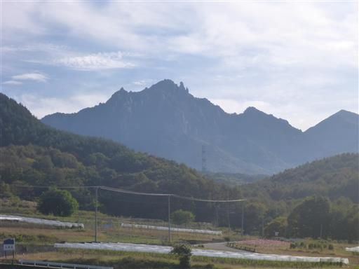
右の方には金峰山が見える。五丈石がはっきりと見えている。
もう山頂部は雪で白く染まっている。
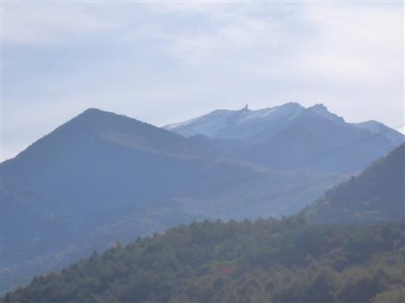
信州峠の駐車場に車を停める。標高1470m。

駐車場のすぐ反対側が登山口だ。この峠道は意外に車がよく通る。
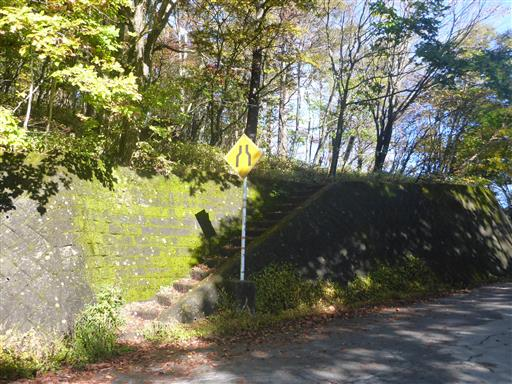
登山開始。明るい尾根道だ。
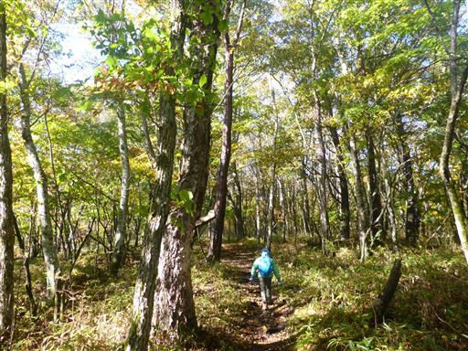
トリカブトの花が咲いている。秋の花の代表だ。
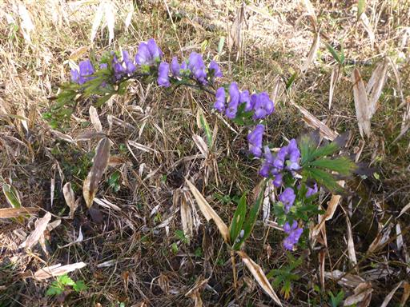
気持ちの良い尾根道が続く。最初に標高を上げた後は、比較的楽な道だ。
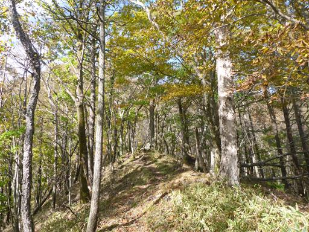
途中で富士山を望む。全体的に雲の量が多いが、富士山が見られてラッキーだ。
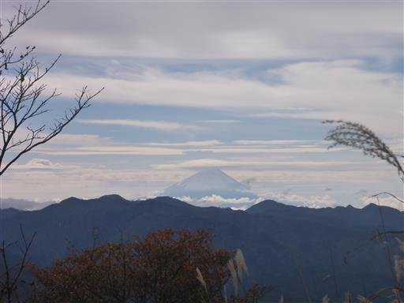
こちらは金峰山。この高さまで登ると、もう瑞牆山は背景の山に埋もれている。
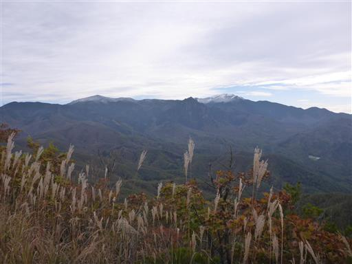
カヤトの原に到着。ここからは周囲の展望が大きく開ける。
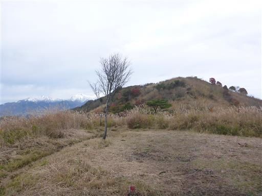
南アルプスの山々。
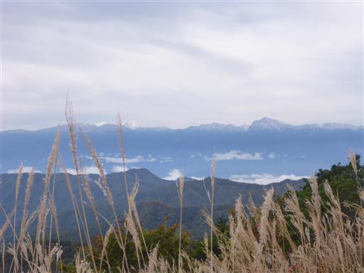
間近には八ヶ岳。
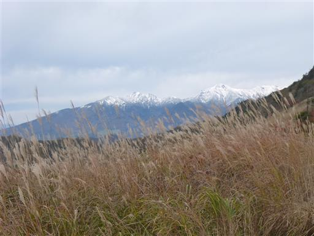
浅間山にも、もう雪が積もっている。
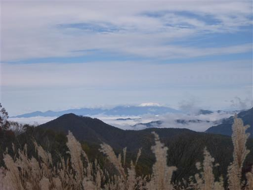
遠くの方には中央アルプスの山々も見えている。こちらも真白だ。
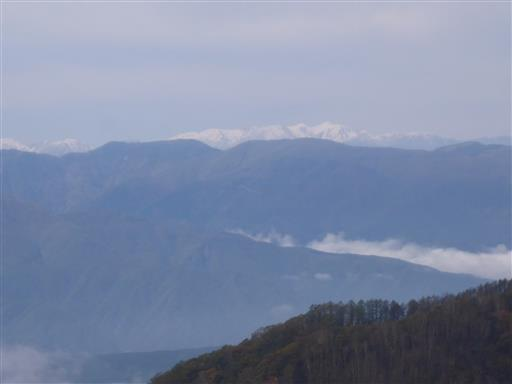
多くの山々に囲まれた立地の良い山で、展望は非常に良い。
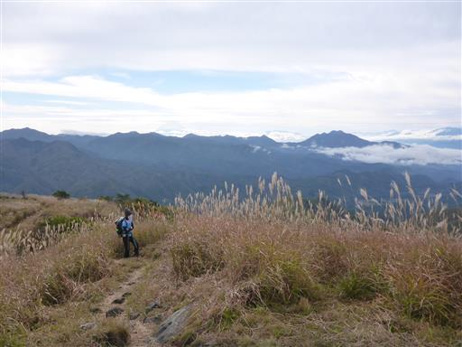
美しいカヤトの原を歩く。朝は快晴だったのだが、雲が出てきてしまったのが残念だ。
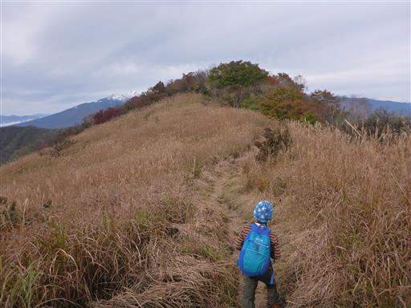
再び展望のない登山道になる。
周囲は岩が散在していて、歩くのに楽しい登山道だ。

標高を上げていくと、周囲の紅葉が美しくなってくる。
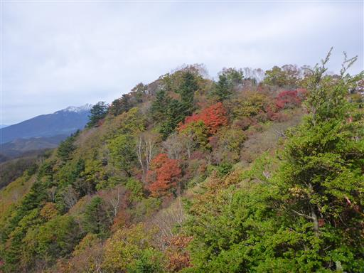
曇り空が残念だが、この辺りは紅葉真っ盛りだ。
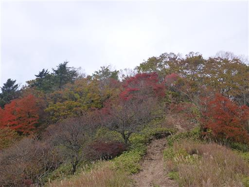
横尾山山頂に到着する。標高1818m。
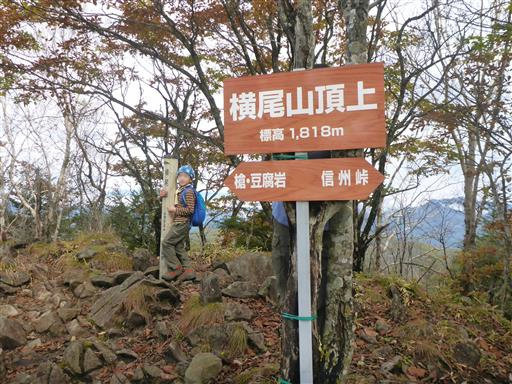
山頂からの展望。
大きな展望は広がらないが、紅葉と八ヶ岳を望むことができる。
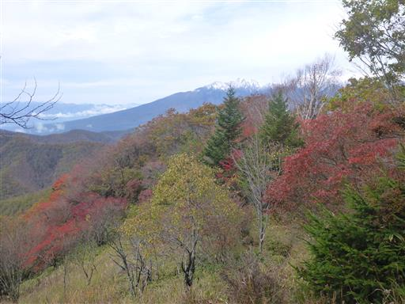
横尾山往復だけだと短いので、豆腐岩まで往復することにする。
横尾山から先は途端に道は狭くなり笹薮登山道になる。
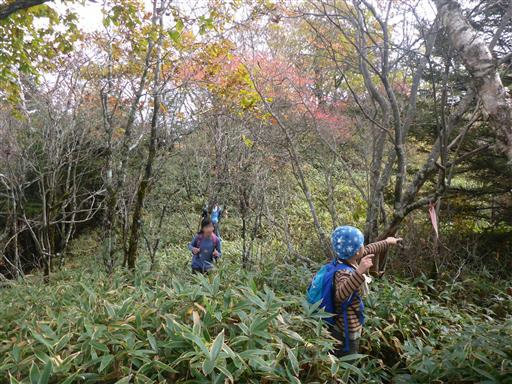
水がたまったリンドウ。
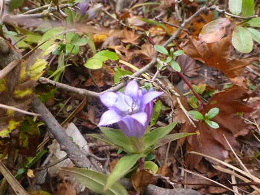
少しだけ展望ポイントがある。
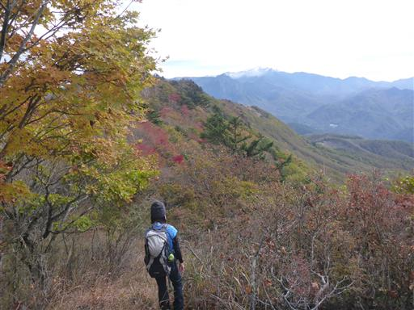
左に折れる標識となぜか食べ物の袋が巻き付けられている。
どこかの登山口に通じてそうだが、踏み跡はほとんど見当たらない。
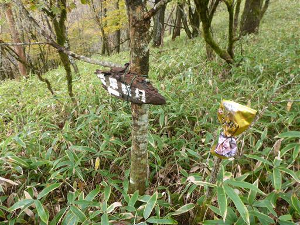
さらに笹薮尾根道を突き進む。
笹の背丈は膝くらいなのだが、歩きにくいので娘は文句を言い続けている。
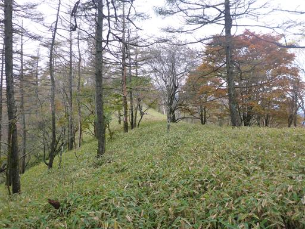
豆腐岩に到着。
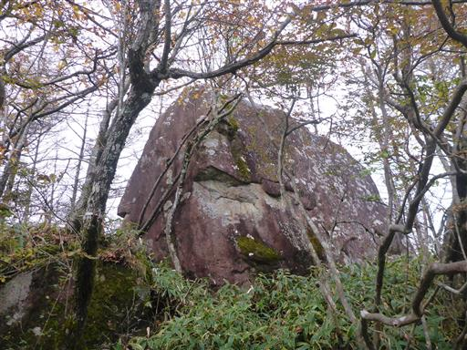
大して豆腐には見えないが、ちゃんと標識もある。
歩行距離を伸ばしたいために来ただけで、他に見るべきものもないので、
豆腐岩を一目見たら引き返すことにする。
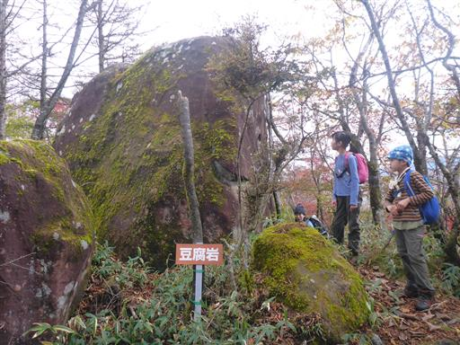
ボーっとしていて、帰り道を間違える。
5分ほど歩いて間違いに気づき引き返す。
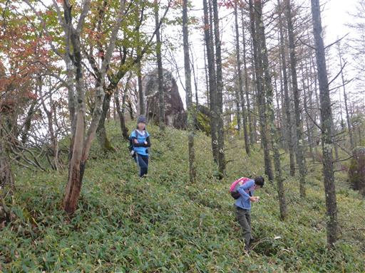
鮮やかな紅葉。
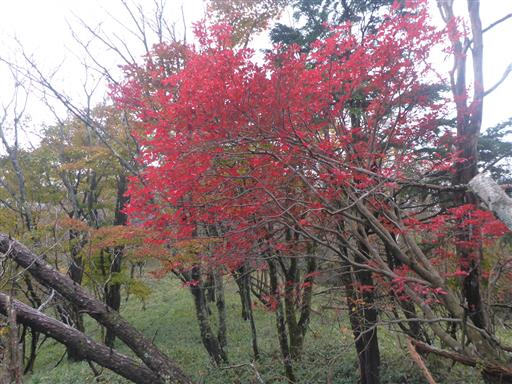
だんだん雲が増えてきて、帰り道では全体が雲に覆われてしまう。
横尾山で昼食をとってから下山する。
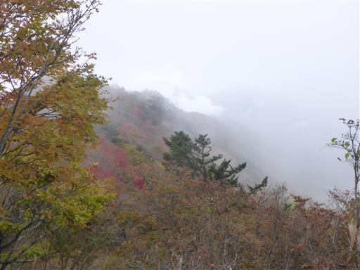
毛虫を発見。もう寒いが無事成虫になれるだろうか？

カヤトの原に戻ってくる。展望の良かったこの場所はもう何も見えない。
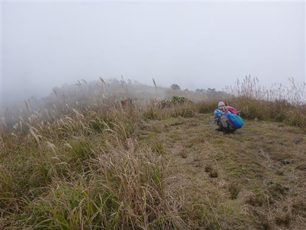
美しい虫を発見。
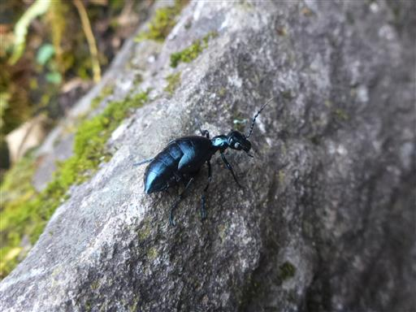
葉っぱでお面を作って遊ぶ。遊びながら歩いて無事下山する。
思ったほど天気は良くならず残念だったが、地味な山の割に
富士山、南アルプス、八ヶ岳などの展望が得られて良かった。
横尾山から先の道はかなり踏み跡が少なく、子連れで歩くには少々きつい道だった。
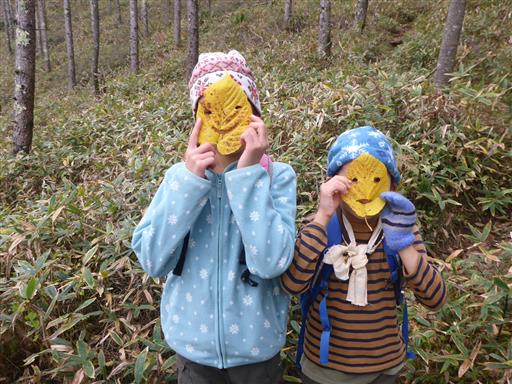